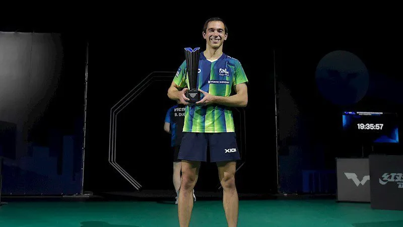
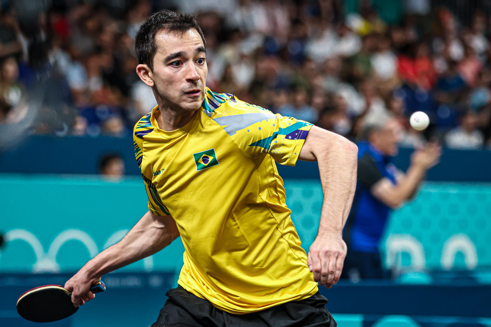
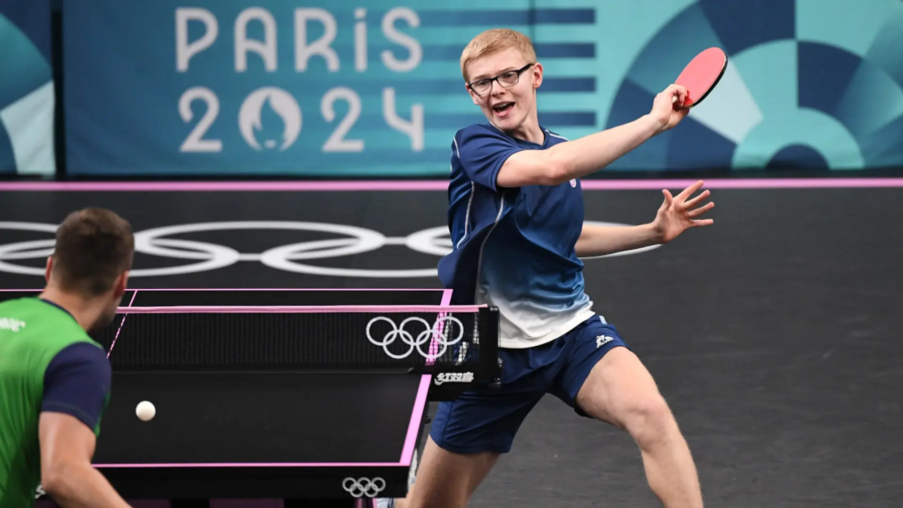
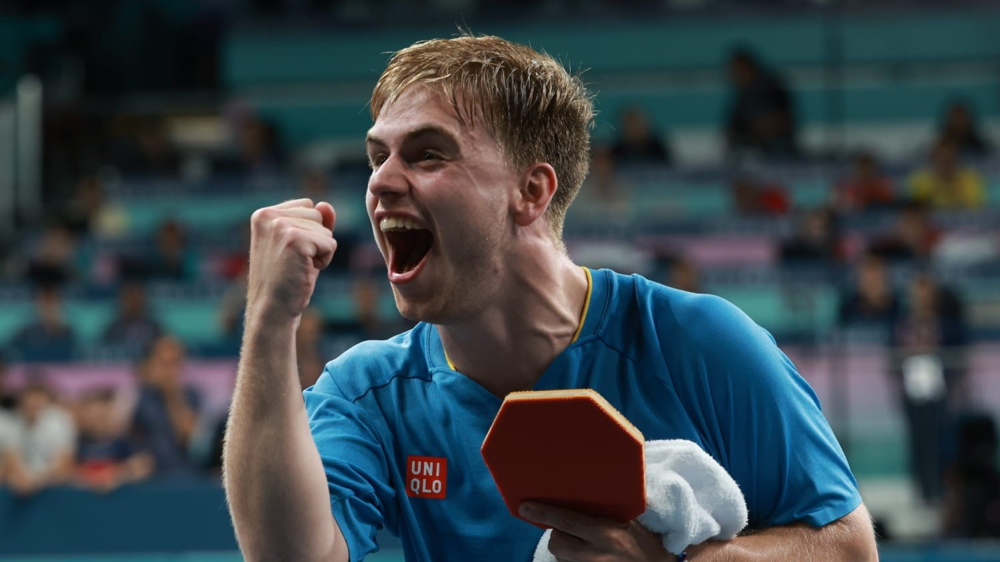
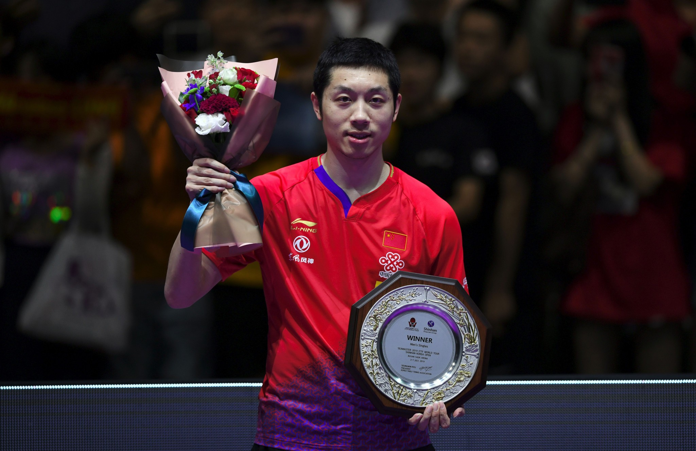

O tênis de mesa, ou ping-pong, é um esporte de raquete para dois ou quatro jogadores, jogado numa mesa dividida por uma rede. O objetivo é rebater uma bolinha sobre a rede, tentando fazer com que o adversário não a retorne, por meio de golpes precisos e rápidos. Ele surgiu no século XIX na Inglaterra e evoluiu de um passatempo recreativo para um esporte olímpico competitivo, com regras e equipamentos padronizados.
Meus Jogadores favoritos


Hugo Calderano
Mesa Tenista Brasileiro
Melhor atleta brasileiro da historia, atual numero #3 do ranking mundial, vem conquistando muitos titulos, atualmente com 29 anos

Felix Lebrun
Mesa Tenista Frances
Com apenas 19 anos é o atual #5 do ranking, famoso pelo estilo de jogo Classineta, seu pai era um atleta e treinou os irmãos Lebrun para serem os melhores

Truls Moregard
Mesa Tenista Sueco
Famoso por ser uma surpresa das Olimpiadas de 2024, eliminou o top 1 do ranking e foi medalha de prata, com apenas 22 anos

Xu Xin
Mesa Tenista Chines
Esta entre os 10 melhores jogadores da historia do esporte, teve uma grande alavancada ao ganhar muitos titulos, jogava de classineta, hoje aposentado